Est. 1986 · Kitsilano
Who We Are
A locally owned bottle shop built around honest recommendations and well-made drinks.
Our Story
Kitsilano's Bottle Shop
Since 1986.
Broadway Beer Wine & Spirits is a locally owned shop in Kitsilano, serving Vancouver since 1986. We offer a carefully selected range of wine, beer, and spirits from British Columbia and around the world.
We host tastings and events, create thoughtful gifts, assist with cellar and wedding selections, and offer delivery across British Columbia.
Good bottles are meant to be shared. Our shop is built around honest recommendations, quality, and a welcoming place for people who enjoy well-made beer, wine, and spirits.
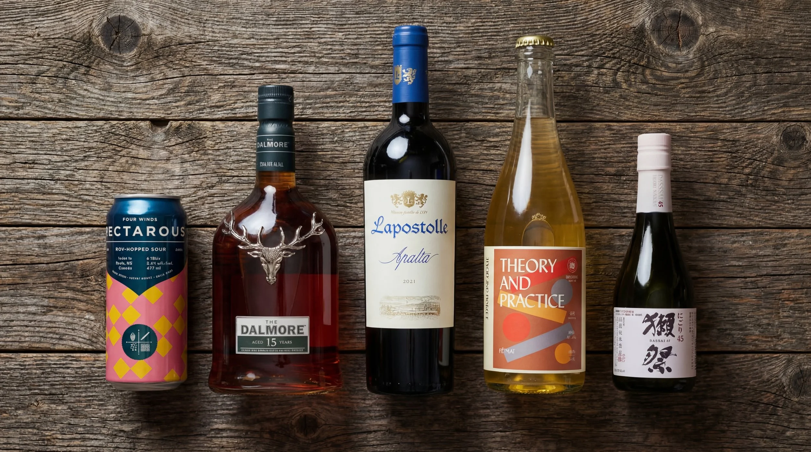
What We Do
More Than a Bottle Shop.
Curated Selection
Over 1,500 SKUs across wine, beer, and spirits, carefully chosen, not just stocked. Spec bottles, small producers, and everyday pours that earn their shelf space.
Corporate Gifting
Office delivery, staff appreciation gifts, and custom holiday packages. We also provide cellar consulting for anyone building a curated wine or scotch collection.
Tastings & Events
From casual sip-and-chats to educational sessions and the occasional murder mystery. A welcoming space for people who enjoy well-made drinks.
Local Delivery
Same-day delivery within 10km via Uber Eats and DoorDash. Province-wide shipping anywhere in BC via Canada Post.
Cellar Consulting
Expert guidance for building a personal wine or spirits collection, from initial recommendations through to ongoing acquisition.
Wedding & Event Selection
We help couples and event planners find the right bottles for every budget, guest list, and occasion.
The Team
The People Behind
the Counter.
Jason Li
Brick & Mortar Manager
Jason has spent over 20 years in the liquor industry and runs the day-to-day operation of the shop. He knows the product, knows the suppliers, and knows how to keep a well-run floor. If you have a question about what is on the shelf or need to place an order, he is your person.
Jason@broadwaybeerwine.caChristopher Reid
BC Products Manager & Marketing
Chris brings over 20 years in the industry to Broadway, managing the BC product portfolio, marketing, and events. If you are looking to book a private tasting, plan a corporate gift, or want to know what is new from BC producers, he is your first call.
Chris@broadwaybeerwine.caSince 1986
Our History.
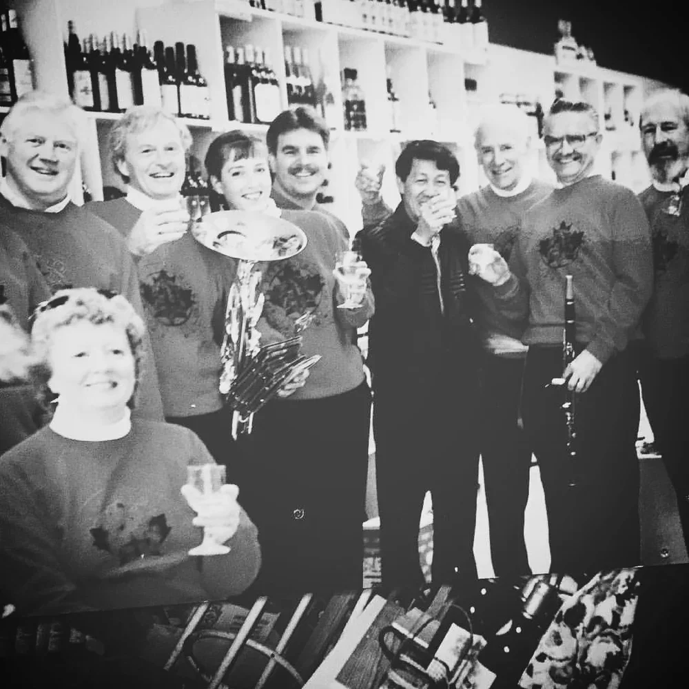
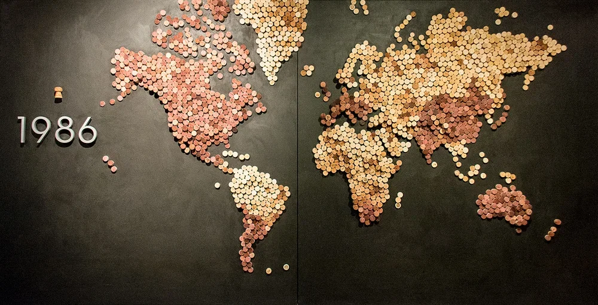
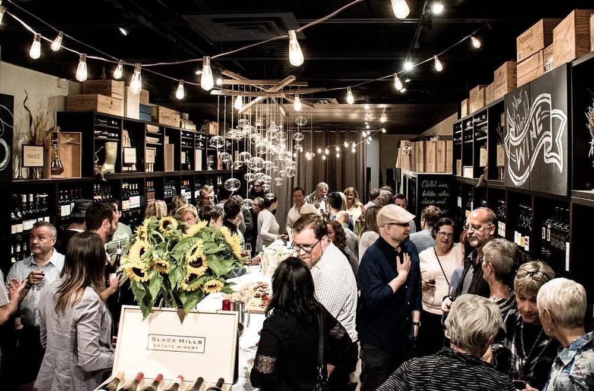
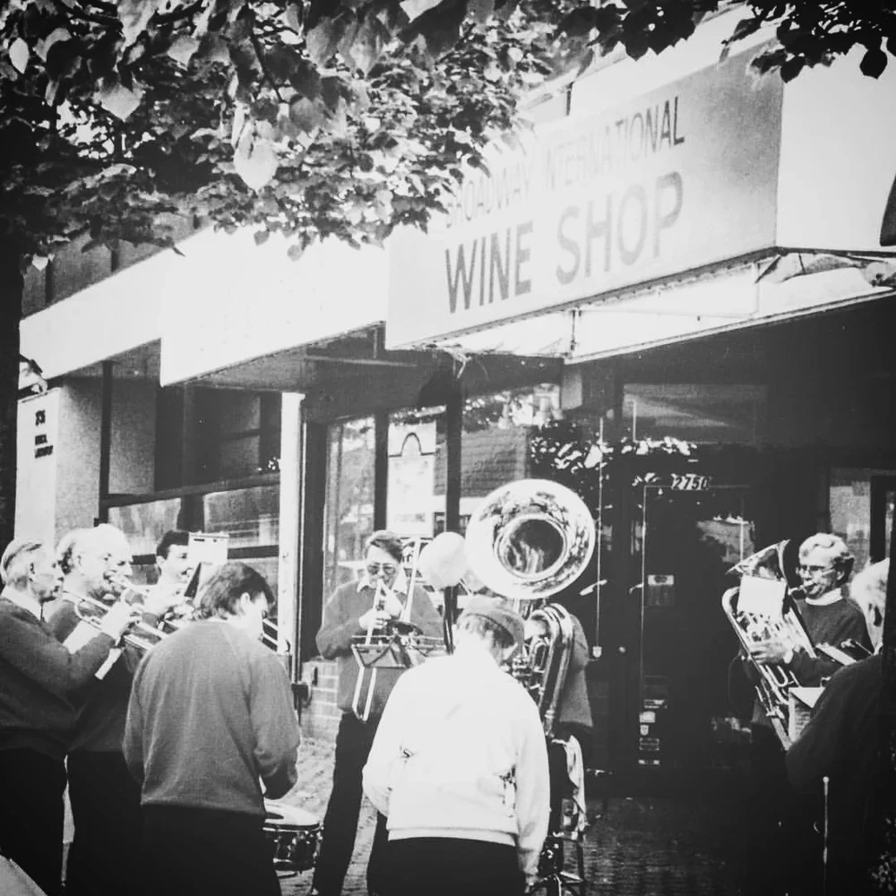
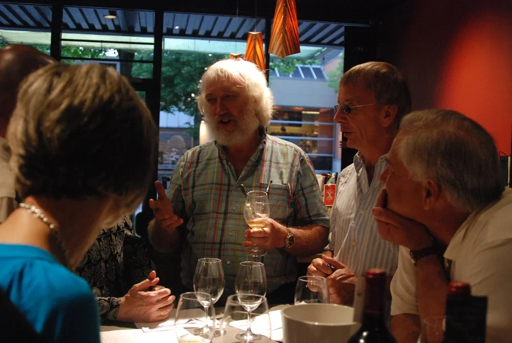
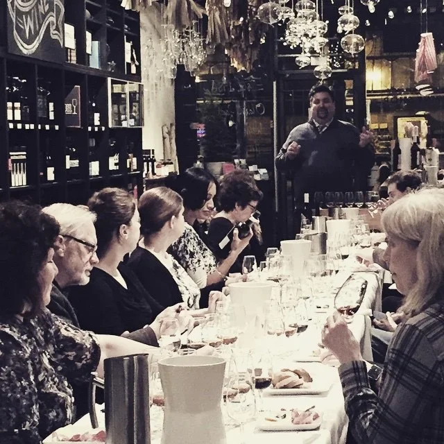
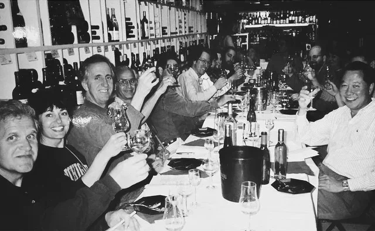
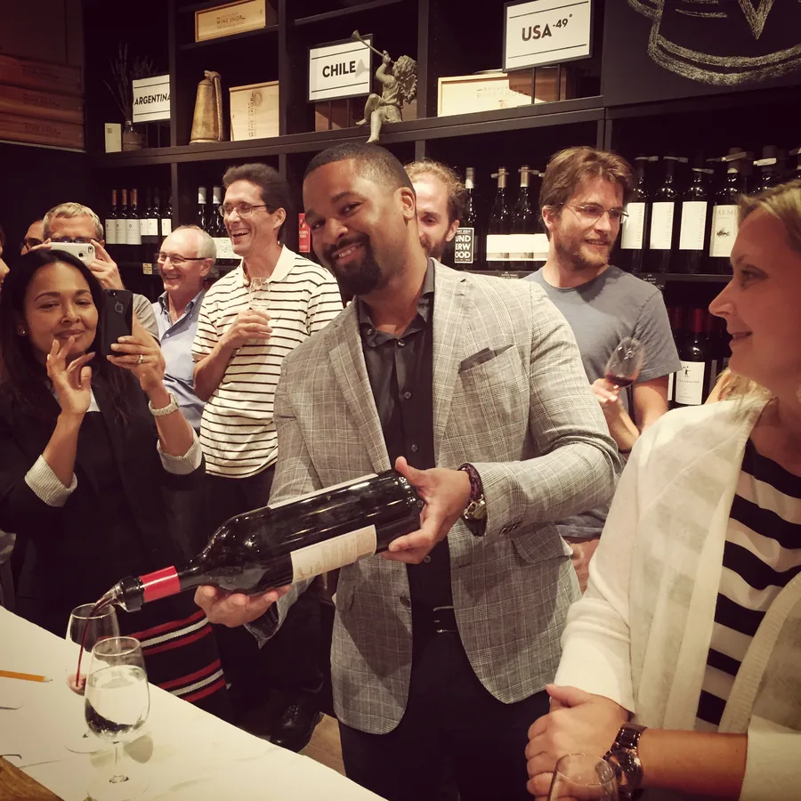
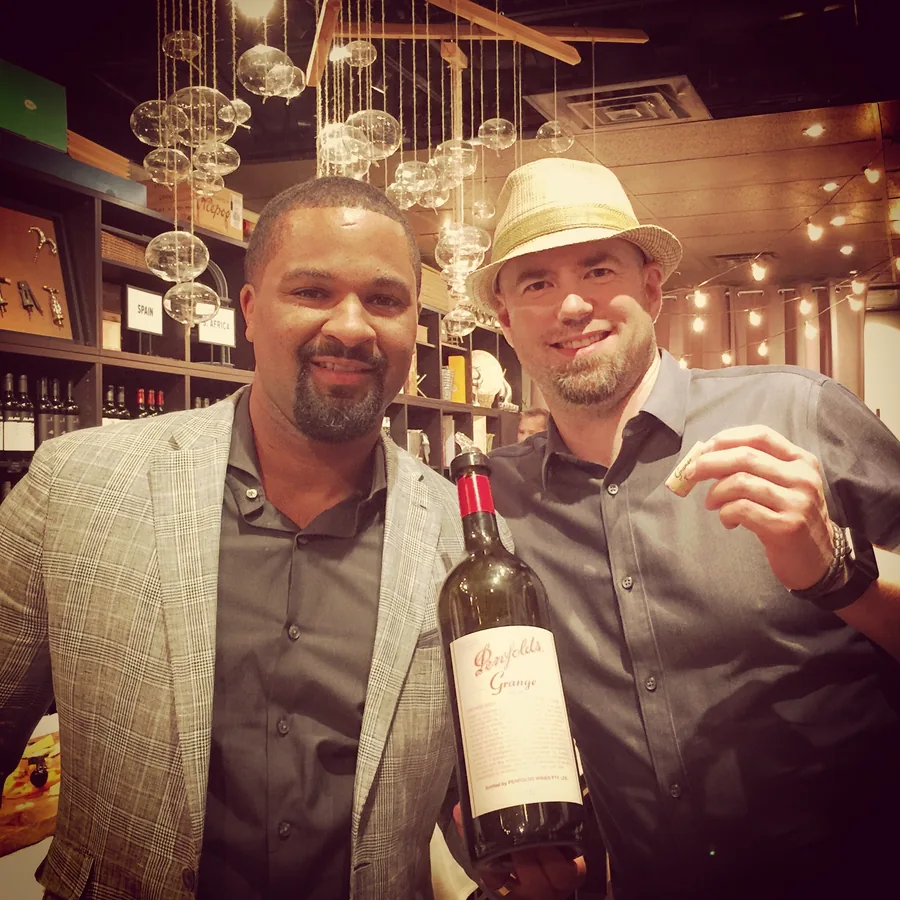
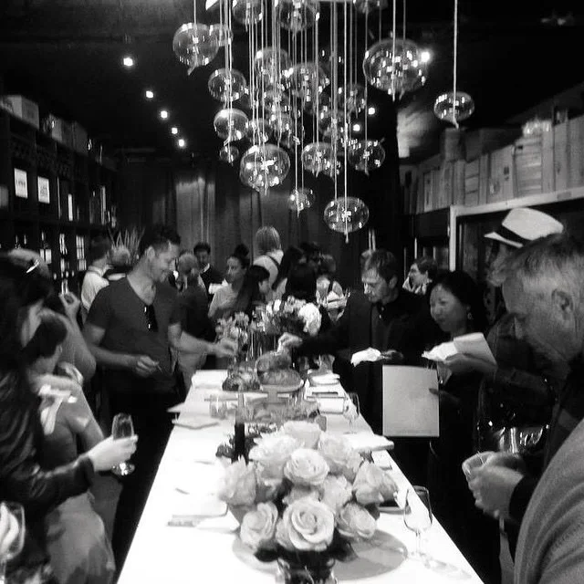
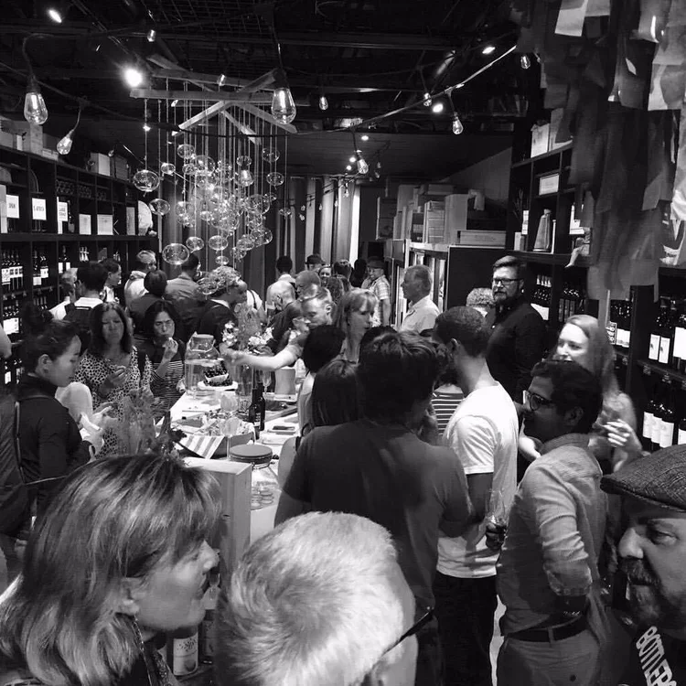
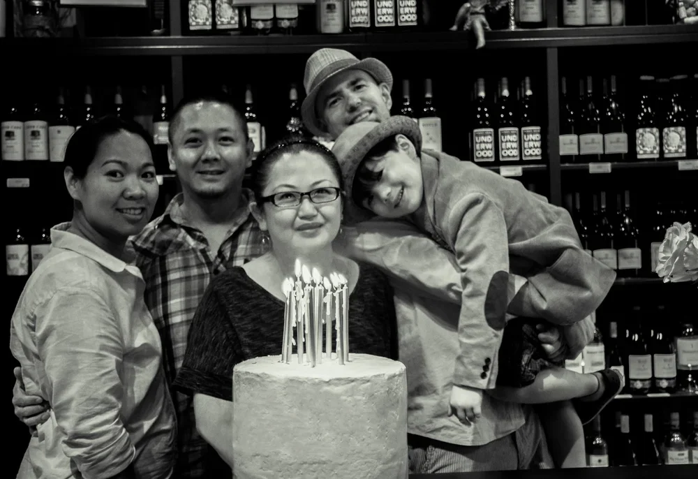
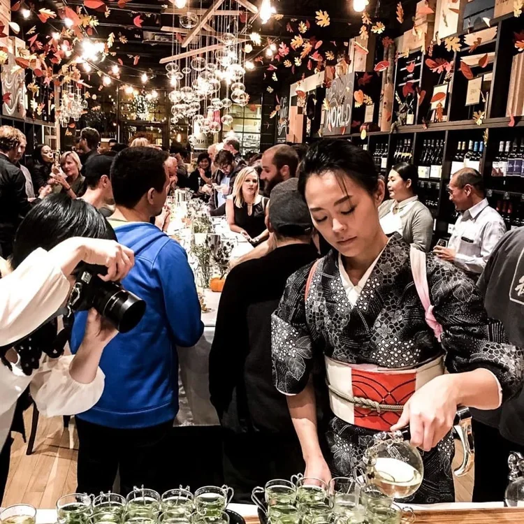
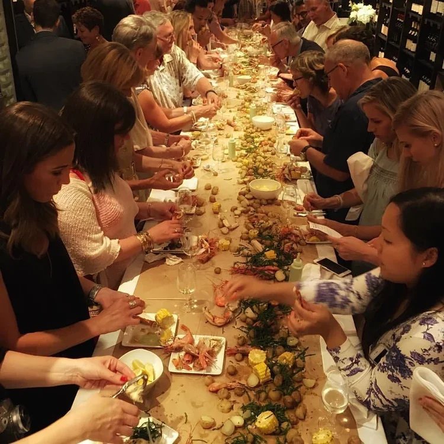